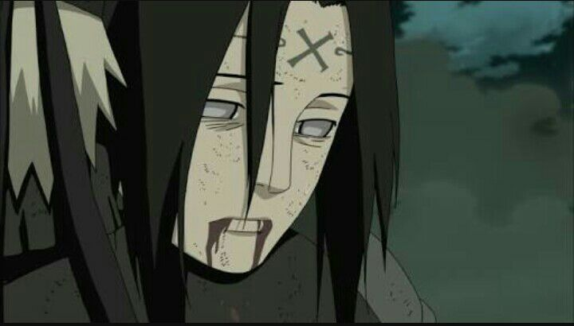

Morte do Neji

Chegando à frente do campo de batalha, Neji informou a Naruto que ele era a chave para a nova estratégia de batalha, e antes que pudesse dizer-lhe o que tinha acontecido com Inoichi e Shikaku, o Jūbi tentou atacar o grupo novamente. Correndo ao lado de seu tio, e seguindo suas ordens, os dois Hyūga usaram as Oito Trigramas Palmas Giratórias do Céu para desviar o ataque do animal, ganhando o elogio dos outros no campo de batalha para sua aptidão. Ecoando sentimentos posteriores de seu tio que as pessoas poderiam morrer no campo de batalha e que era melhor para um pai saber que eles morreram antes de seus filhos, como seu próprio pai teve, Neji, Hiashi e Hinata declararam que iriam proteger Naruto no campo de batalha. Enquanto a batalha entre a Aliança e a besta era travada, Neji foi capaz de dar tempo suficiente para Naruto entrar no Modo Sábio e usar a Liberação de Vento: Rasenshuriken, mas quando o animal utilizou um único ataque de movimento rápido, eles não foram capazes de desviar à tempo.
Como Hinata joga os braços para proteger Naruto, Neji intercepta o ataque e protege a ambos, como os ramos perfuram o jovem Hyūga, Kitsuchi prende o Jūbi e Hiashi olha aterrorizado. Naruto grita para um médico, mas Neji, aceitando sua morte, explicou que era tarde demais para ele, fazendo com que Hinata chorasse. Neji explicou a Naruto a importância de permanecer vivo. Quando perguntado por Naruto devastado por que ele, um gênio do clã Hyūga, sacrificou sua vida para ele, Neji lembrou da sua luta com Naruto nos Exames Chūnin, e disse a Naruto que ele fez isso porque o chamavam de gênio. Ele então pensou que ele finalmente entendeu a escolha de seu pai de se sacrificar para proteger seus amigos. Com seu falecimento, o juinjutsu de Neji foi ativado, e seu Byakugan foi selado para sempre.